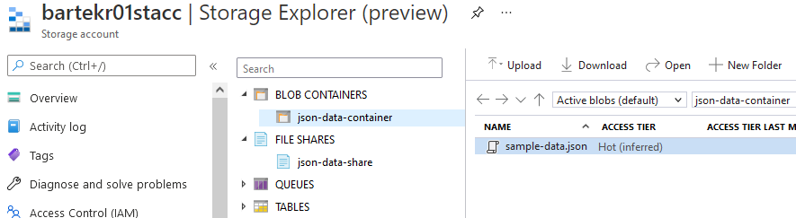
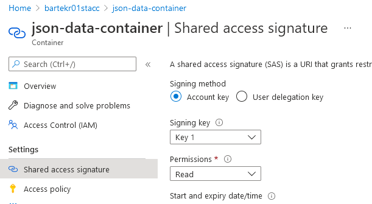
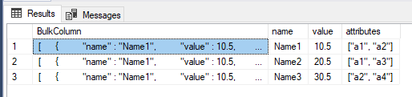

In one of the projects, we store source files as JSON data on Azure Blob Storage. These files must be loaded into Azure SQL Database. We use a .NET code to perform this, but how could I load the files directly into Azure SQL Database?
The environment
Nothing extraordinary: a default storage account bartekr01stacc configured with local redundancy (LRS) + SQL Database VariousExamples located within bartekr01 Azure SQL Server. The storage account has json-data-container container (set as private) and json-data-share file share.

Both locations contain the same file with 3 records - a name, a value and an array of names.
[
{
"name" : "Name1",
"value" : 10.5,
"attributes" : ["a1", "a2"]
},
{
"name" : "Name2",
"value" : 20.5,
"attributes" : ["a1", "a3"]
},
{
"name" : "Name3",
"value" : 30.5,
"attributes" : ["a2", "a4"]
}
]
The steps to import data
For future reference - I found this example on GitHub
- Create database master key (if none exists)
- Create a credential for access to the container
- Create data source - a pointer to the blob storage container
- Load data
- Profit!
The first two steps are optional if access to the blob storage container is public.
To verify if I already have a Database Master Key (DMK), database scoped credential and data source, I can use system views:
SELECT * FROM sys.symmetric_keys;
SELECT * FROM sys.database_scoped_credentials;
SELECT * FROM sys.external_data_sources;
Import
The data is stored in a private container, so I will use a stored credential. As for now (June 2021), I can use only SAS (Shared Access Signature), so I create one in Azure Portal. Read access is enough.

Other options - using AZ CLI (I use PowerShell as the default shell, hence $ in front of a variable name)
$AZURE_STORAGE_CONNECTION_STRING = 'DefaultEndpointsProtocol=https;AccountName=bartekr01stacc;AccountKey=S(...);EndpointSuffix=core.windows.net'
az storage container generate-sas --account-name bartekr01stacc --name json-data-container --https-only --permissions r --expiry 2021-06-19T23:59:59Z --connection-string $AZURE_STORAGE_CONNECTION_STRING
and Az PowerShell module
$ACCESSKEY = 'S(...)'
$c = New-AzStorageContext -StorageAccountName bartekr01stacc -StorageAccountKey $ACCESSKEY
New-AzStorageContainerSASToken -Permission r -Protocol HttpsOnly -ExpiryTime 2021-06-19T23:59:59Z -Context $c -Name json-data-container
Having the SAS the rest is almost straightforward.
-- we need a database master key for encryption, create one
CREATE MASTER KEY ENCRYPTION BY PASSWORD = '<password, should be strong>';
-- crete a credential
-- NOTE: DO NOT PUT FIRST CHARACTER '?'' IN SECRET!!!
CREATE DATABASE SCOPED CREDENTIAL bartekr01staccCredential
WITH
IDENTITY = 'SHARED ACCESS SIGNATURE',
SECRET = '<copy/paste generated secret (without initial ? - if exists)>'
;
-- point to the destination (and store it as data source)
CREATE EXTERNAL DATA SOURCE bartekr01stacc
WITH (
TYPE = BLOB_STORAGE,
LOCATION = 'https://bartekr01stacc.blob.core.windows.net/json-data-container',
CREDENTIAL = bartekr01staccCredential --> CREDENTIAL is not required if a blob storage is public!
);
-- https://bartekr01stacc.blob.core.windows.net/json-data-container/sample-data.json
SELECT *
FROM OPENROWSET (
BULK 'sample-data.json',
DATA_SOURCE = 'bartekr01stacc',
SINGLE_CLOB
) x
CROSS APPLY OPENJSON(x.BulkColumn)
WITH (
name CHAR(5),
value NUMERIC(3, 1),
attributes NVARCHAR(MAX) AS JSON
) j
Observations:
- when generating SAS from the Azure Portal, pay attention to the start date - you might get access errors like I did when I incidentally switched the start time zone to UTC instead of my local time (I would have to wait an hour for it to start working)
- this problem should not occur using AZ CLI or AZ module, as it assumes the SAS generation datetime as the start date (if not provided)
- when using
OPENJSON- when I want the array to be available for further processing, I have to useAS JSON, and it implies usingNVARCHAR(MAX)as the data type - if you update the credential (using
ALTER DATABASE CREDENTIAL), you don’t have to recreate the external data source.
Result:
